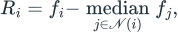
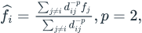
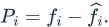
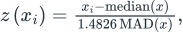
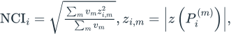

整体概括
利用已有站网，问一个站与同时刻的邻居是否一致
作者把州级 CORS 从定位基础设施扩展为区域完好性监测传感器。对适合空间比较的电离层观测，先依据站点地理邻近关系计算残差、梯度与图平滑度，再用网络一致性指数标记局地偏离。研究重点是利用现有网络观测提供空间交叉核验，而非训练新的深度预测模型、增加专用监测硬件，或直接估计用户位置的保护级。
对照原文证据
Methods: We develop a graph-based Network Consistency Framework (NCF) that evaluates each station against its spatial neighborhood using four complementary consistency metrics: neighborhood residual, spatial gradient, residual, and graph smoothness. The metrics are combined into a Network Consistency Index (NCI). The framework is demonstrated using two consecutive days of four-constellation observations from 50 stations of Alabama DOT-maintained CORS network, using changes in vertical total electron content ( \Delta VTEC) and the Rate of TEC Index (ROTI) as spatially coherent observables.The framework requires no additional hardware and can operate continuously using existing network observations, extending current network monitoring beyond positioning performance to GNSS integrity.异常被定位，不等于故障来源已被确认
论文示范显示网络观测可用于识别不符合周围区域场的站点，但作者明确保留了成因调查的边界：接收机故障、局部干扰、欺骗或其他因素都可能造成空间不一致。本文展示的是调查线索和排查优先级，不是有攻击真值标签的自动归因系统。对电离层研究而言，同样需要先核对自然空间结构，而不能把离群点一律当作硬件坏值。
对照原文证据
Findings: The framework successfully quantified network-wide spatial consistency and identified localized anomalies through the Network Consistency Index (NCI). The detected anomalies represent stations whose observations deviated from the surrounding regional network, indicating potential integrity issues. Determining whether these anomalies originate from receiver faults, localized interference, spoofing, or other causes requires further investigation.This index is a measure of spatial consistency. It localizes disagreement within the network and acts as an indicator of anomaly. The exact cause can be found through further analysis. This distinction is deliberate, since inconsistency in spatial signature can be produced by a local RFI, a terrestrial spoofer, receiver fault, or an antenna fault.Research gap
单站历史和短基线差分之间，还有区域尺度的空档
作者指出，单接收机或单站历史监测没有利用站间同时刻背景，而短基线协同防欺骗常把共同大气延迟差分消去。本文关注相距数十公里的固定参考站：大气差异不能再当成完全公共误差，却仍可在正常条件下作为较平滑的区域场。这里把以往被消去的电离层变化变为交叉核验对象，是空间尺度与问题定义的转变，不是对既有方法的简单替代。
对照原文证据
As a result, there remains a gap in the literature concerning the intermediate regime, where permanently surveyed stations separated by tens of kilometers are treated as a single distributed sensor over a state-sized area.The quantity canceled by the previous studies is precisely the one our study investigates.The two approaches are therefore complementary rather than competing.先筛选可比较的物理量，不能把所有接收机指标都插值
框架把受区域大气状态控制、可作邻域插值的量与站点特有量分开。TEC 变化和安静条件下的 ROTI 被作为空间场；载噪密度比受天线、硬件与局部射频环境主导，不应直接用邻站平均值当作该站正常值。后者可以提供独立排查证据，但不是随意加入空间场就能提高识别能力，这一边界对工程多传感器融合同样重要。
对照原文证据
Class A observables are geographically interpolable. They are governed by the atmospheric state over the region rather than by the hardware at any one site, and consequently form fields that either vary smoothly across the network or remain approximately uniform under nominal conditions. For such observables, spatial interpolation from neighboring stations is expected to be close to the measured value.The mean C/N_{0} level used here is dominated by station-specific hardware and the radio environment within a short distance of the antenna. Neighboring stations carry no information about the nominal value of this quantity at a given site, so interpolating it between stations is not meaningful.Second, Class B observables provide evidence external to the spatial test, which can be used for further investigation.算法主线
从双频观测到电离层指标，稳定偏差是假设而非天然消失
作者使用双频几何无关观测提取 TEC，连续跟踪弧段内以载波平滑码，再用薄壳模型映射为垂直量。时间差分用于减弱稳定的接收机与卫星差分码偏差；如果接收机偏差发生跳变，这一前提就被破坏，空间残差可能突出显示设备效应。ROTI 则描述窗口内斜向 TEC 变化率的离散程度，不能与垂直 TEC 的跨日差值混作同一种单位。
对照原文证据
The geometry-free carrier combination \lambda_{1}\varphi_{1}-\lambda_{2}\varphi_{2} measures the same quantity with far lower noise but carries an unknown ambiguity, and smoothing the code measurement with carrier measurement over each continuous tracking arc yields a low-noise, unambiguous STEC ( Ciraolo et al., 2007 ) .Absolute VTEC therefore requires that the DCBs be known. However, if we take the time difference in VTEC, we get \Delta VTEC. This difference cancels b^{s} , and it cancels b_{r} as well whenever the receiver bias is stable between the time intervals, leaving only the ionospheric change. A receiver whose DCB jumps between days violates that assumption.The rate-of-TEC index (ROTI) is the standard deviation of \mathrm{d\,STEC}/\mathrm{d}t over the analysis window.图结构、梯度与平滑度各自回答不同的问题
站点在投影地图中连成邻近图，本文图邻域固定为 k=6。邻域残差比较本站与邻站中位数，梯度描述周围场变化陡不陡，图能量刻画站间加权差异的大小。梯度可以在异常周围多个邻站升高，而不只在源站升高，所以不能把一圈高分点都算作独立故障。图拉普拉斯在此用于空间诊断，并不意味着作者训练了图神经网络。
对照原文证据
We represent the network as an undirected graph \mathcal{G}=(V,E) whose nodes V are the stations and whose edges E encode spatial neighbor relationships, taken here to be the k nearest neighbors of each station in the map projection.We set k=6 throughout, which is the smallest neighborhood that keeps the graph connected for this station geometry while remaining local enough that a single anomalous neighbor cannot dominate the median in Equation ( 4 ).For a given Class A observable field \{f_{i}\} we define four metrics per station. They are complementary by construction. The first and third measure whether station i itself departs from its neighborhood, the second measures whether i lies in a region of abrupt spatial change, and the fourth measures the contribution of i to a network-wide smoothness energy.in field units per kilometer. A coherent field yields a small and slowly varying G_{i} , whereas a localized disturbance inflates the gradient throughout the surrounding neighborhood rather than at the disturbed station alone.留一预测是核心：待检查站不能参与预测自己
预测残差先排除当前站，再用距离加权的其他站观测估计其背景值。正文说明实际限制为八个最近贡献站，这与图诊断的邻域参数不是同一配置。排除自己避免故障观测直接把自己的预测拉向异常，但邻站异常、稀疏布局或真实非平滑场仍可能影响背景。该预测是同窗口的空间插值，不是用未来数据训练的时间序列预报。
对照原文证据
The primary anomaly score predicts a station from all other stations and measures the miss. Using the same inverse-distance-weighted (IDW) interpolator employed for the map products ( Shepard, 1968 ) , the leave-one-out estimate at station i isrestricted to the eight nearest contributors, and the prediction residual isBecause \hat{f}_{i} never uses f_{i} , a faulty station cannot mask its own fault, and P_{i} is for that reason the quantity on which the composite index below is built. Kriging interpolation ( Cressie, 1990 ) can be substituted for IDW without altering the framework.分清四项诊断与最终 NCI 的具体构成
摘要概括多项一致性指标被组合，容易让人以为最终指数直接汇总全部诊断图。正文给出的具体定义更窄：先对留一预测残差作网络稳健标准化，再跨选定的可插值观测量计算加权均方根。邻域残差、梯度与图能量主要帮助解释偏离位置和扩散范围。复现时应以明确的指数公式为准，不能把不同单位的原始诊断值直接相加。
对照原文证据
Because \hat{f}_{i} never uses f_{i} , a faulty station cannot mask its own fault, and P_{i} is for that reason the quantity on which the composite index below is built.The composite Network Consistency Index at station i is the weighted quadratic mean of the prediction-residual z -scores across the chosen Class A observables m ,with weights v_{m} set to unity by default. By construction \mathrm{NCI}_{i}\approx 1 for a station that is consistent with its neighborhood across all chosen observables, and \mathrm{NCI}_{i}\gg 1 for a station whose observables jointly depart from what the surrounding network predicts.关键公式
先看有量纲残差，再看无量纲标准化
下面保留从邻域残差、留一预测到指数构造的关键原式。残差沿用输入场单位：TEC 变化以 TECU 计，ROTI 以 TECU/min 计；不能直接比较两者的绝对幅度。网络中位数与绝对偏差中位数用于建立稳健尺度，使各观测残差可在共同尺度上汇总。使用绝对值或平方后，最终指数不再保留偏高还是偏低的方向，解释时需回看有符号残差图。
对照原文证据
Neighborhood residual is the most direct measure of local agreement is the difference between a station’s value and the median value of its neighbors,The primary anomaly score predicts a station from all other stations and measures the miss. Using the same inverse-distance-weighted (IDW) interpolator employed for the map products ( Shepard, 1968 ) , the leave-one-out estimate at station i isSo that metrics and observables can be compared on a common scale, each metric is converted to a z -score using the network median and the median absolute deviation (MAD),The composite Network Consistency Index at station i is the weighted quadratic mean of the prediction-residual z -scores across the chosen Class A observables m ,高斯参照阈值不是实测误报率承诺
作者用高斯零假设解释标准化离群阈值，并默认各观测权重相同；这提供了易解释的筛查刻度，却不是已经测得长期告警风险。相邻站与不同电离层指标可能相关，稀疏边界的预测不确定度也与内部站不同。若要把指数阈值用于业务告警，需要独立正常日和事件日进行概率校准，不能仅因指数大就给出攻击发生概率。
对照原文证据
so that |z|\geq 3 marks an outlier under a Gaussian null hypothesis.with weights v_{m} set to unity by default. By construction \mathrm{NCI}_{i}\approx 1 for a station that is consistent with its neighborhood across all chosen observables, and \mathrm{NCI}_{i}\gg 1 for a station whose observables jointly depart from what the surrounding network predicts.so its score carries wider prediction uncertainty than an interior station’s.退化尺度、缺测重建与插值边界仍需代码级核验
本次未运行作者实现，无法确认网络绝对偏差中位数接近零、同址站距离为零、连续缺测和邻站数不足时具体怎样处理。已展示公式没有替代这些数值保护条件。复现应保存每个窗口的有效站集合、距离权重、标准化中心与尺度，并核对断站是否触发重新建图；若自行增加稳定项，应明确那是实现选择，而不是冒称原文给出的规则。
邻域中位数残差：最直观的局地交叉检查

本站观测减去附近站的中位数，保留偏高偏低的方向。结果沿用原观测单位，可以直接看哪一站与局部背景不一致；它是诊断指标，并不是最终指数中跨观测合成的那项留一预测残差。
符号与实现提醒
- fi / fj
- 当前站与邻站在同一分析窗口的标量观测，单位由 TEC 变化或 ROTI 决定。
- N(i)
- 按投影地图距离确定的近邻集合。
- Ri
- 带符号邻域残差，不是概率，也不是接收机坐标误差。
中位数对少数异常邻站较稳健，但邻域整体偏移、稀疏几何或真实强梯度仍会改变参照。不能把此式与下一条插值残差混成同一指标。
留一距离插值：预测当前站时明确排除它自己

利用其他站的观测按距离反幂加权，得到当前站的预期场值。权重归一化后输出仍与原场同单位；正文实际限制为最近的若干贡献站，不能把求和符号不加说明地实现为任意全网平均。
符号与实现提醒
- f̂i
- 排除站 i 后得到的空间预测，不是未来时间预报。
- dij
- 投影地图中的站间距离，应在所有权重计算中使用一致单位。
- p
- 原式给定的反距离幂次，控制较近站的权重强度。
- j ≠ i
- 禁止待检查站用自己的值来掩盖自己的异常。
实现需要处理同址站、缺测与邻站不足；留一仅排除当前站直接泄漏，不保证邻站都正常或背景完全可插值。
留一预测残差：最终指数所依赖的基本异常量

用实测值减去留一预测值，衡量当前站相对其他站所定义区域场的偏离。其方向和物理单位应先保留用于解释，之后才进入稳健标准化及跨观测合成。
符号与实现提醒
- Pi
- 当前站的带符号留一预测残差。
- fi
- 实际观测值。
- f̂i
- 上一条公式产生的空间背景预测。
残差同时受本站观测、邻域质量和插值误差影响。大残差是排查线索，不能独自判断干扰、欺骗或自然电离层结构。
网络稳健标准化：将不同单位的残差放到可比尺度

以网络中位数为中心、经高斯参照常数缩放的绝对偏差中位数为尺度，得到无量纲值。它减少单个离群点对中心与尺度的牵引，但没有自动处理所有空间相关性或边界不确定性。
符号与实现提醒
- xi
- 待标准化的某项站级度量；构造 NCI 时使用相应观测的预测残差。
- median(x)
- 同一窗口有效网络样本的中位数。
- MAD(x)
- 网络内相对中位数的绝对偏差中位数。
- z(xi)
- 稳健标准化结果，无量纲，仍可带方向。
尺度接近零或大量站共同异常时需专门数值与统计检查。本次未核对代码中的保护策略，不把高斯参照解释成已测得业务误报率。
NCI：跨观测的预测残差标准分加权均方根

对选定可插值观测的留一预测残差标准分取绝对值，再作加权均方根。指数无量纲、非负，较大值表示多观测综合的空间不一致，而非攻击概率或用户坐标误差。
符号与实现提醒
- m
- 选定的可插值观测类型；本示范使用 TEC 变化和 ROTI。
- vm
- 各观测权重，正文默认相等。
- zi,m
- 站 i 在观测 m 上的预测残差稳健标准分绝对值。
- NCIi
- 站级组合一致性筛查指数；平方合成后不保留偏离方向。
原式合成的是不同观测的预测残差，不是把邻域残差、梯度、预测残差与图能量的原值全部相加。指数高也不保证外部核验置信度更高。
实验怎么做
使用州网连续两天的归档，而非已完成在线攻击演练
示范采用阿拉巴马州 50 站在 2026 年七月 5、6 日的归档观测，时间为 UTC，采样间隔 30 秒，覆盖 GPS、GLONASS、Galileo 与北斗。本文用归档文件处理，虽讨论实时接入的可能性，但实际还受同时获取各站数据的权限限制。这是既有观测下的离线区域诊断，不应写成已部署并通过真实在线欺骗攻击验证的服务。
对照原文证据
The demonstration draws on observations from the 50-station Alabama DOT (ALDOT) CORS network for two consecutive days, 5 and 6 July 2026, with all epochs referred to Coordinated Universal Time.The data are in RINEX 3.04 format and contain carrier-phase, code, Doppler, and C/N_{0} measurements at a 30-second interval for GPS, GLONASS, Galileo, and BeiDou ( International GNSS Service (IGS) and RINEX Working Group, 2018 ) , obtained from the network’s post-processing archive.Hence, for the purposes of this study, archived data is analyzed, but this method can be translated to real-time operation if all 50 station observations are received simultaneously.先做可用性筛查，再读跨日场与空间插值地图
作者先检查站点是否确实交付观测，避免停机被误读为空间异常。结果中的 TEC 图采用第二天相对第一天的变化，最终指数也在完整第二日窗口汇总，不能由原始采样间隔推导出告警延迟。州界内连续色面来自插值，并在离站一定范围外掩膜；色面的连续性是制图结果，不表示每处都有独立测量或相同置信度。
对照原文证据
In continuous operation, such a station is excluded by a screening step, as it would otherwise be misread as a spatial anomaly.Figure 2 shows the four metrics applied to the day-over-day change in VTEC, for the second study day relative to the first.Figure 3 shows the composite index of Equation ( 13 ), computed over the full second study day from the two class A observables.The result is interpolated to a statewide map, clipped to the state boundary, and masked to the “coverage-confidence” region, defined as the area lying within 50 km of a station, for visualization purposes.没有独立复现检测率、误报率或计算吞吐
本次只核读来源和原图，未运行 TEC 提取、插值及指数计算，没有为作者补造基线检测器对比、攻击真值、阈值扫描或端到端耗时。已读结果主要是正常运行中的自然异常与个例诊断，不足以给出可泛化的误报率和漏报率。后续应固定数据可用性规则、窗口定义及独立外部证据，再在隔离事件的测试集上评价完整监测链。
提升与证据
AL84：残差定位站点，其他证据提示设备偏差但不锁定成因
AL84 的跨日 TEC 变化为 -2.1 TECU，周边约 +1 TECU，留一残差为 -3.6 TECU、标准化绝对值 5.5。作者结合载噪密度比跳变及随后一天约 14 TECU 的全卫星共同偏移，认为存在局地接收端异常和差分码偏差特征。但正文仍要求频谱或接收机层面的后续调查，不能把这些证据改写为已证实的欺骗事件或已确认的某一种硬件故障。
对照原文证据
Station AL84, in west-central Alabama, is the clear exception. Its \Delta VTEC of -2.1 TECU sits against a neighborhood near +1 TECU, and this isolated deviation produces the largest neighborhood residual ( |z|=5.8 ), the largest prediction residual ( P_{i}=-3.6 TECU, |z|=5.5 ), and the highest local graph energy in the network.the station shows jumps on C/N_{0} , which is a Class B observable computed outside the spatial test; and on the following day the same station showed a much larger offset of approximately 14 TECU that was uniform across all satellites, which is a DCB signature.Determining the exact cause of the anomaly requires further investigation using spectrum-monitoring techniques or other signal-level GNSS interference and spoofing detection methods.ALMJ：指数更高，却被作者标为较低置信的线索
组合指数中 ALMJ 为 10.6、AL84 为 4.1；ALMJ 的 ROTI 为 0.29 TECU/min，高于网络中位数 0.09 TECU/min。但 ALMJ 缺少框架之外的核验，最近邻约 42 km，而网络中位间距约 21 km。作者因此报告为较低置信检测：分数高并不等于成因更明确或预测更可靠，需要把空间布局和独立证据与异常幅度一起交付。
对照原文证据
Two stations rise well above that background and are labeled on the map, namely ALMJ with an index of 10.6 and AL84 with an index of 4.1 .ALMJ is driven almost entirely by ROTI, at 0.29 TECU/min against a network median of 0.09 TECU/min, with a prediction-residual |z| of 15 .No evidence external to the framework is available for it, and it sits in a sparse part of the network, its nearest neighbor roughly 42 km away against a network median spacing near 21 km, so its score carries wider prediction uncertainty than an interior station’s. We therefore report ALMJ as a lower-confidence detection.邻站的高分不应被重复统计为独立事件
结果表列出较不一致的站点，但 ALGR 与 ALAS 的分数受 AL84 邻域影响，作者明确指出它们并非独立异常事件；其余若干站也没有外部证据可确认或排除。框架的合理用途是缩小排查范围，而非按高分站数量直接计算故障数或攻击成功率。空间梯度和插值会把一个站的局地偏离传播到周围图面，解读必须保留这种相关结构。
对照原文证据
ALGR and ALAS are driven by \Delta VTEC and are the neighbors of AL84 identified by the gradient metric, so their scores are not independent of the AL84 event.The final column reports only evidence computed outside the spatial framework; entries marked “none available” indicate a flag that the present dataset cannot confirm or dismiss.
原图由 arXiv 加载；若未显示，可打开下方原图链接。
跟着原图读
- 先读每个面板的单位和正负方向
左列残差以 TECU 计且可正可负；右上梯度以 TECU/km 计，右下为图能量。色标范围与物理意义不同，不能横向比较哪幅图的颜色更“严重”。
- 再沿 AL84 比较残差、梯度和能量的位置
左下标注站在残差图中呈负偏离，而梯度可以突出其邻域的场变化，图能量又强调加权差异。多个高值区域不必对应多个独立事件，需结合站点与邻接关系判读。
- 最后把圆圈观测与连续底色分开
圆圈对应站位，连续底色由空间插值生成。正文用站点统计确认异常，不能从插值热点边缘估算干扰源的影响半径、精确位置或攻击强度。
该图是固定两日之间 TEC 变化的诊断，不是实时电影，也不是受控欺骗试验。平滑底色不等于全州每处都有独立测量。

原图由 arXiv 加载；若未显示，可打开下方原图链接。
跟着原图读
- 先确认这是无量纲指数而不是 TEC 或定位误差
色面是跨观测组合后的空间一致性分数，已失去原残差的正负方向。高值只说明与邻域不一致，需回上一图和结果表寻找由哪一种观测驱动。
- 再看西南边界的站点密度与标注
ALMJ 位于相对稀疏处，正文强调预测不确定度更大且缺少独立核验；AL84 则有额外接收机指标支持。不能只按热点颜色或分数排序就认定谁更可能遭到攻击。
- 最后检查色标上限和邻站关联
ALMJ 的正文站级数值高于图中色标上限，地图颜色不足以读出其精确分数；ALGR 又与 AL84 邻域事件相关。应查结果表，不从饱和红色估算数值，也不把每个标注都算作独立故障。
地图是第二日窗口的插值展示，不给出告警时延、欺骗源坐标或用户定位保护级。本站保持官方图源原样，不修改其色标或热点范围。
局限与追问
作者自己的边界：短期静日示范，不是受控攻击性能验证
作者明确说明工作针对正常运行和自然发生的异常，而非受控欺骗实验；时间跨度短，季节、地磁扰动和长期变化仍待考察。网络边界及稀疏区域降低检测置信度，也是正文提出的局限。因而它能作为区域一致性监测的概念验证，但不能据此宣称达到某种长期告警保障，或在强扰动期间仍可把所有自然电离层梯度与局地故障自动分离。
对照原文证据
The demonstration focuses on nominal operation and naturally occurring anomalies rather than controlled spoofing experiments. Only two days of observations were analyzed, so seasonal, geomagnetic, and long-term variability remain to be evaluated.Detection performance also depends on network geometry, with reduced confidence near sparsely instrumented boundaries, suggesting benefits from adaptive neighborhood weighting and cross-state data sharing.共同受扰或真实非平滑场，可能挑战“邻域就是正常背景”
框架以附近站点定义预期区域场，适用于邻域足够可靠且场在相应尺度可比较的条件。若多个邻站共同受影响，或真实电离层变化在该尺度上很陡，背景插值和稳健归一化都需要重新审视。这里是根据方法前提提出的研究追问，并非本站已证明该方法在这些场景必然失败；尤其不能把空间一致直接等同绝对真实，把空间不一致直接等同攻击。
对照原文证据
Hence, the baseline is not defined by historical data; rather, it is defined by the instantaneous measurements of surrounding stations.Class A observables are geographically interpolable. They are governed by the atmospheric state over the region rather than by the hardware at any one site, and consequently form fields that either vary smoothly across the network or remain approximately uniform under nominal conditions. For such observables, spatial interpolation from neighboring stations is expected to be close to the measured value.This index is a measure of spatial consistency. It localizes disagreement within the network and acts as an indicator of anomaly. The exact cause can be found through further analysis. This distinction is deliberate, since inconsistency in spatial signature can be produced by a local RFI, a terrestrial spoofer, receiver fault, or an antenna fault.站级筛查分数尚未连接到用户定位风险保证
本次未验证异常站是否进入实际改正数产品、用户端误差如何放大、剔站后定位是否改善，也没有测得从观测异常到业务告警的端到端延迟。因此 NCI 暂不能替代 PPP 或 RTK 的保护级、完好性风险和服务可用率。部署时应保留原始证据、观测可用性和诊断理由，让定位服务与站网运维各自核查，而不是只输出一个不带上下文的报警数字。
连接你的研究
连接中国区域 ROTI 与 PPP：做按风暴和台站留出的增量价值实验
可先用静日拟合站网空间基线，在独立风暴及未见台站上比较仅用单站 ROTI、仅用邻域残差和联合监测方案。同步对齐周跳、失锁、PPP 误差与重收敛事件，交付事件级检出率、误报警率、提前量、概率校准和误差尾部变化。不要把高 NCI 当作电离层扰动真值；应另用独立仪器或射频、接收机诊断分开自然环境与设备因素。
连接图学习与工程感知：先保留透明基线，再学有不确定度的背景
可把留一距离插值作为基线，再比较带缺测掩码、站点质量和邻域不确定度的图模型，严格排除当前站目标泄漏。按整段时间与区域留出，主动移除站点、模拟共同偏差并测试真实强梯度，交付残差校准、跨区域误报、故障定位准确率与在线延迟。新增模型须证明相对简单空间方法的收益，不因使用图结构就默认深度网络更可靠。
来源与边界
原图来自固定版本的 arXiv 官方图源，作者及图注已保留；外部嵌入不自动授予转载权。本站不镜像作者图片、PDF 或全文，另行转载须核对许可。外部原图受读者网络条件影响；图后解说由 AI 生成，仍需回原文核验。本篇为 CC BY-NC-ND 4.0，具有非商业及禁止演绎限制；本站外链引用未改色、未镜像的官方原图并另作评论，其他使用须遵守原许可。
对照原始英文摘要
收录历史：2026-10-20
原文许可：查看本版本许可 ↗；外部嵌入不等于任意转载授权。